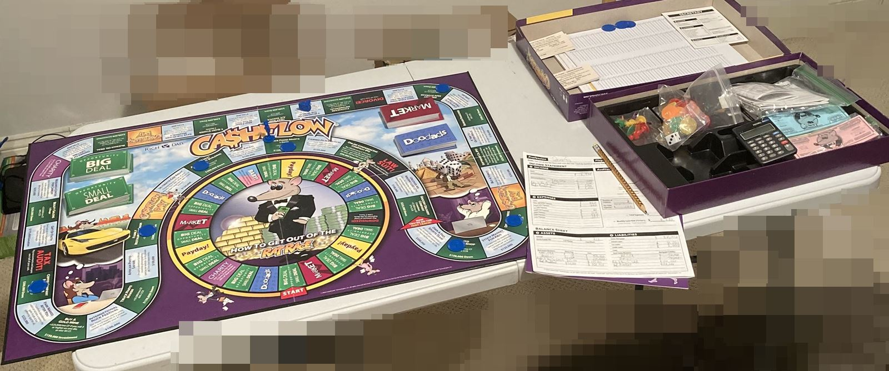
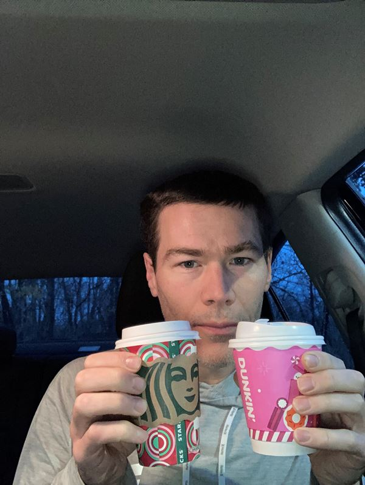
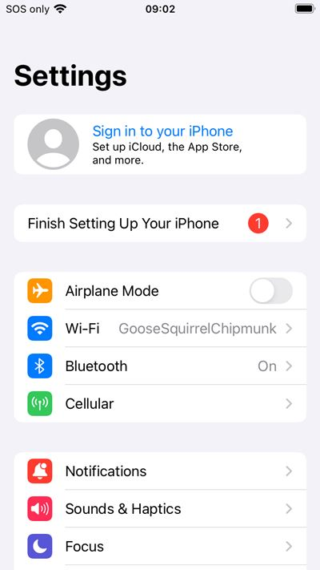
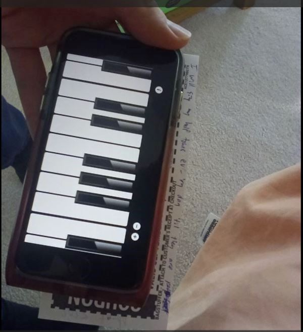

推銷產品的連結 lemonmama.com promoted product is:
2024 November Blog Posts
#055
2024-11-21 2106 by Morgan Jassen on lemonmama.com
U.S. Federal DOGE Department WTF Love It
Laughed so hard when I heard DOGE is the acronym for the new government department run by the persona of Elon Musk.
Because I remember on SNL on 2021-May-9th persona Elon joked about Dogecoin and it was controversial but also funny then.
I can't help myself but laugh at high level contrarian stuff like this.
It's like a middle school sports tournament team naming themselves for fun.
It's like a college intramural sports team naming themselves something clever.
So funny.
It's like persona Musk is Rick Rolling the entire country.
Persona Elon knows how to double down on irreverence.
But this is all assuming he'll take the job seriously, which I assume he will.
Let me be clear, I currently still do trust that persona Elon knows how to work and have fun at the same time.
In conclusion, love it how persona Musk can have fun at the same time as taking care of business, at the highest levels; inspiring!
#054
2024-11-21 2100 by Morgan Jassen on lemonmama.com
Write For Humans Not Robots
dont write for robots , write for humans
I spent too much time formatting hyperlinks and tagging headlines.
So now I'll just write text and hit publish.
more often.
I'm writing for humans not for robots.
that's why I'm here.
#053
2024-11-18 1800 by Morgan Jassen on lemonmama.com
Dug In To Cashflow Classic Boardgame
I dug in to CASHFLOW classic boardgame.
In past I played cashflow classic and Cashflow for kids:
Notes from Playing the Rich Dad Cashflow Classic Game Online in 2022
I’m Liking This Board Game CASHFLOW for Kids
Ok so takeaways:
It feels really heady to get on the fast track and buy business after business for $100,000 each.
But I am glad because it is practice.
Kiyosaki & co. authored the game this way I think.
Other takeaways:
I used the ledger instead of the cash.
I am playing solo this time so i get to roll dice every time no delay.
Takeaway other;
It’s so surreal, I buy and sell real estate and businesses within a minute or so of each.
This is not realistic, in real life it would take at least months to buy each business/property.
However no worries.
This is the point of the game.
Keep it high level.
Stay focused on the ownership part, stay focused on the buy/sell part.
These three days I loved feeling like an entrepreneur.
I loved feeling like a business owner, buying and selling businesses.
Another takeaway:
Amazing.
At points in the game I am becoming impatient.
I think to myself, damn, why is it so slow to get to $3,000 passive income?
or, damn, why is it so slow on the fast track to get to $450,000 of cashflow?
LOL.
Am I spoiled?
Or is this the point.
The point is, even if you have $1,000 dollars then the point is you can have a goal to be impatient to get to $3,000 passive income.
And evein if you have $400,000 passive income then you can be impatient to get to a goal of $450,000 passive income!
The game says its not greedy, the game says it’s hard/noble.
amazing.
Picture at the end:

#052
2024-11-18 1456 by Morgan Jassen on lemonmama.com
Slow Vs Loser Is Moot
9/10ths of americans don't care whether a slow person's a loser vs. whether a slow person's trolling them, instead 9/10ths of americans just move on around a slow person.
in this situation, no one's going to verbally with words tell the slow person that they're slow nor that they're being worked around and moved past.
in other words if you find you're slow, then it's not anyone's job to help you catch up.
it's your job to catch yourself up.
so how does a slow person become aware that they are slow?
because maybe a slow person starts to wake up and realize clues that they are a screw up.
Like in the song Once in a Lifetime by artist Talking Heads, the person wakes up to find themselves living in a shotgun shack.
so how become aware?
some clues are that people around a slow person seem to be always moving much faster and quicker than a slow person.
some clues are that getting fired from job after job as the years go by.
some clues are every day drinking coffee.
some clues are every day drinking alcoholic beverage.
tired every day.
YAHSSSS!!!
Then now Joe Rogan puts the phenomenon into words. Very similar to what I am saying here:
#2173 - Jimmy Dore - The Joe Rogan Experience
at the ~45m. mark
paraphrasing, they are saying like:
'...addiction creates a grown up baby.… maturity stops when one is under addiction …'
In conclusion, these are some ways to know if you are slow. And remember, if you find you're slow, then it's not anyone's job to help you catch up. It's your job to catch yourself up.
#0051
2024-11-17 2044 by Morgan Jassen on lemonmama.com
Hit Hard Spark Joy
Each blog post should hit hard, and spark joy. - Morgan Jassen
'And you'd better talk fast, talk straight, and don't BS anybody.' - persona Robert Kiyosaki in 2024 https://www.richdad.com/podcasts/gerald-celente-financial-trends-2024
In conclusion, hit hard, spark joy, talk fast, talk straight, and don't BS anybody!
#0050
2024-11-17 2042 by Morgan Jassen on lemonmama.com
Admissions Tests And False Modesty
my weakness has been false modesty to a fault
somehow in my childhood i let myself learn this and i got taught this.
and now it's hard to unlearn.
in USA this can be a slow death sentence for social and economic prosperity.
people don't tell you you aren't confident.
they simply avoid you without telling you why, because they see you as lacking confidence.
my fear has been promoting myself, especially in job interviews.
this has so many layers and ramifications that it is ridiculous.
I know this is a thing for many people, so wah wah wah boo hoo poor me, get over it.
Ok but why write on this topic again?
I made another mistake and got this feeling again.
And it hit me.
This is the same feeling that holds me back from job interviews.
And so now that I started to become more aware of this feeling, my conscience intuition gut telling me this feeling, now I will be alble to recognize it more quickly and step back and take a breath and adjust for next time I encounter this, and calm down and be more level headed next time.
Got this feeling when trying to join a facebook group today.
The form asked two questions including 'How did you hear about this group?' and 'what do you want to get out of joining this group?', and then a checkbox that says I agree the terms as well as another trivial dropdown box with a few easy choices in it.
I easily answered the first question because i had heard the facebook group host on one of my favorite podcasts.
and I thought to myself, the checkbox and dropdown at the end are easy, i'll just tick them off when I get to them, easy peasy.
So i filled the first box. Then I got to the second text box and in hindsight, my breathing paused, my muscles tightened (chest, body, and face). My subconscious is teling me this is a test, that this is the main question that could determine whether i get accepted to this group or not. My answer probably needs to be genuine and also line up with the group's goals, and possibly at least 50% non-selfish while again still being true/actual/genuine.
So i thought and felt what is the real answer that will express why i want to join the group while being genuine and avoiding saying bad things about myself while ...
and you know what it is the same feeling i get in every job interview in the past 30 years of my life.
And then i finished that second question and i hit the submit button.
Welp. turns out i hit submit so quickly I neglected to check the 'agree to terms of service' checkbox and neglected to fill that other simple dropdown with some easy choices too. I know I did. Even thought the form submitted, I clearly remember saving those to the end, then i clearly remember hitting the submit button before again scrolling down.
Now the form is submitted, no option to go back and edit it.
The moral of the story is, the feeling of fear of promoting myself in admissions tests has been crippling, when I face it i need to be able to recognize it immediately and not let is cripple me.
Because I am disabling myself from being able to do even the simplest actions and so I'm failing all sorts of life's admissions tests.
HOw?
I think I need to purposely take more admissions tests more often.
Maybe just ask friends for help with little things more often.
MAYBE JUST DO WHAT PERSONA NOOSHY CALLS 'INITIATING A HANGOUT' MORE OFTEN LIKE ONCE A WEEK.
Yes, i think this could be the single most benefit thing to me is call up a friend about once a week and 'initiate a hang out'. It is a test of my character because there is a chance my friend may say no because i didn't quite make the cut in their busy schedule. And if so then I'll at least gain confidence in having conversations while undergoing this feeling of
Related blog post:
Have A Pity Party and then Suck It Up and Go Make Friends
#0049
2024-11-15 1923 by Morgan Jassen on lemonmama.com
Strongly Worded Idioms
"Don't Count Your Chicks Before They're Hatched."
...ok, but what if I want to plan to know how many chicks I'll have, to plan for it ahead of time?
I'm gonna start making strongly worded idioms.
And using them.
Back in Ye Olden Days, people talked straight.
The point is, it can be strongly worded.
It is good sales.
It can be the speaker's job to talk accurately and not overemphasize.
But you know what?
It can be the listener's job to the following:
Take Everything With A Grain of Salt.
Also even if an idiom is overly simplistic or strongly worded, it can be the listener's job to themselves treat it in the following way:
Everything In Moderation
Let me close by asking you, does this have the same ring to it?
"Careful counting your chicks before they're hatched."
In conclusion, I use strongly worded idioms.
#0048
2024-11-15 1732 by Morgan Jassen on lemonmama.com
Limit Order Previous Price
I put a limit order in for the previous day's closing price.
My idea is to feel like I'm controlling my buy price.
And my idea is that it is fair.
So I chek the previous day's closing price.
Then I decide is that an OK price.
If so then I place my order at that price.
It's one way to do it.
~
However some would say it's overthinking it.
Some would say it's too much trouble.
Some would say just place a market order.
Some would say to get a good deal then place a limit order at a lower value than yesterday's price.
One time a friend of mine, Speedy Corona, even set a limit order higher than yesterday's price, friend's idea was friend wanted to sell quickly.
In conclusion, one way is put a limit order for yesterday's OK price, but in the end, there are different ways to do it.
* This person's name was changed. Also "Speedy Corona" is random from:
"#0008 - Four Hundred Forty-Nine Badass Names in Random Order"
https://lemonmama.com/lemonmama/2024/0008-badass-names-x449.html
#0047
2024-11-13 2114 by Morgan Jassen on lemonmama.com
As Dad I Make A Card For Fathers Day
As a dad, what might I do for my kids and family for father's day?
Maybe as a dad I make my kid a card, or as a dad I cook my family a meal and dad washes the dishes?
Maybe flip the script, maybe this is a good way to do father's day.
#0046
2024-11-13 2036 by Morgan Jassen on lemonmama.com
Action Bronson Grills Joe Rogan Aboou Mma Ufc Fighting
At the 27m 25s mark, persona Action Bronson grills persona Joe Rogan aboou mma ufc fighting.
wow at this minute second,
action
grills
joe rogan
asks him
about holding accountalbe.
https://open.spotify.com/episode/5IupxC5sr1zsVLCytRnvLw
honestly i think "Action Bronson" prepped for this episode.
And Joe Rogan less so.
Action Bronson is up on his MMA knowledge.
And now Joe Rogan is scrambling.
It is awesome.
To see this unfold.
In conclusion, Action Bronson grills Joe Rogan like challenges him, and it is so awesome to simply see this unfold.
#0045
2024-11-11 0643 by Morgan Jassen on lemonmama.com
Why Not Both?
Some people say, ooh, Dunkin better, Starbucks better, Dunkin better, Starbucks better.
Why not both?
It's a false dichotomy, like a lot of things these days.
Take a sip.
Try this one...
Mmm, tastes good!
Ok try the other one... (ooh burns tongue)
Mmm, tastes good too!
They both Taste good!
https://rumble.com/v5o5bpz-2024-11-11-0643-why-not-both-dunkin-starbucks.html

#0044
2024-11-09 2217 by Morgan Jassen on lemonmama.com
Finish Setting Up， Not Your iPhone
My phone doesn’t tell me who’s phone it is.
I OBJECT!! It’s not MY iPhone.
It’s just an iPhone.
The Director of development at Apple Inc has an interest to leverage control over my iPhone.
The Director of Development at Apple Inc also purposely pushes this clause “Your iPhone” Your iPhone..., Your iPhone..., Your iPhone...
Push that verbiage onto any user of every iPhone.
And thus they subliminally hint it is yours.
And they control it.
It’s yours, but they control it.
It’s yours.
Things that you own, you control.
But they control it.
You own it but they control it.
Sigh.
In the end what It means to me is that I don’t own it.
TIL.
Today I Learned.
All iPhones and iPads are leased.
I get to use them but not own nor control them.
Know this.
Because this is also true of Microsoft devices and Samsung devices and Google devices and Apple devices.
These devices are all owned and controlled by the manufacturer.
I only get to use them.
This is a fact that I just learned today.
Even though it took me years to fully learn this.
And so this is why it’s important to reset one’s device to factory default not only monthly, but also randomly sporadically too multiple times per month on top of that.
In fact recently in May 2024 I witnessed that iPhone presses and offers to import full image /data/settings upon initial startup following a complete wipe.
Nope. The point of a a wipe, for me, is to regain some control.
Pretty soon multiple times per month complete wipe won’t be enough.
One complete wipe per day will be needed.
Then soon after that one complete wipe after each usage of an app. So multiple wipes per day.
And so this is also why it’s important to get a dumbphone like a flip phone.
This is also why it’s important to have multiple devices, and just use one app per device.
“...Sign in to your iPhone.”
“Finish Setting Up Your iPhone...”
See picture here:

#0043
2024-11-07 0934 by Morgan Jassen on lemonmama.com
I Will Sing My Half Tones
I will sing my half tones every day ‘til they are perfect.
Singing twelve notes in the middle C octave, for singing practice.
(With a thirteenth note at the end that’s the first note of the next octave higher)
I Will Sing My Half Tones Ev’ -Ry Day ‘Til They Are Per[fect]
C4 C4# D4 D4# E4 F4 F4# G4 G4# A4 A4# B4 C5
Video link! here:
https://rumble.com/v5mtg3k-2024-11-07-i-will-sing-my-half-tones.html

NOte: The app used in this video is 'Simple Tap Piano for iOS by Seiji Hashizume'
#0042
2024-11-05 1656 by Morgan Jassen on lemonmama.com
Weird Learning Failing Past Frustration
It's a weird feeling.
Learning you are failing at something.
But the weirder part is learning at the exact same time.
That you've been failing at that same thing for about 20 years.
And it's frustrating at first.
But it gets real weird when you get past the frustration.
And realize.
Now I am aware of my failure.
This time I failed and I know it.
Whereas I before every week for 20 years, I had been failing at the same thing and didn't know it.
So now I have the power to not fail at that anymore.
Feels good.
Once you get past that frustration.
Now I can recognize that failure as a pattern.
Now I can start to succeed at this.
See also: "Grabits and the Zone of Disruption" | https://lemonmama.com/lemonmama/2023/2023-11-08_2029-grabit-zone-of-disruption.html
#0041
2024-11-05 1650 by Morgan Jassen on lemonmama.com
UFC Paradigm Shift Especially With Mcgregor Vs. Diaz Notes
watched more fights. 3rd month-long subscription ended of espn+.
one thing i learned especially after the very last one where i watched video of Conor McGregor fighting Nate Diaz, these are characters.
And in this fight they were fighting to win this fight, not just to last 5 rounds. Each wanted to choke/knock the other out.
Also I had previously seen video of EACH of these fighter and so i remembered examples of how tough and gritty and smart each was.
Each one at this point was a champion and elite and amazing.
And so in the end a champion elite amazing fighter would lose this fight.
More notes: each/both was really on their game in this fight it seemed. Quick, hungry, trained up endurance seemed.
And these characters it seems were both mentally ruthless and taunting.
One thing it seemed to me that, instead of being insulted or offended by McGregor's taunts, Diaz it seemed to me actually fed off of them. Which to me seemed unique becuase in my experience McGregor had usually been able to get under most other opponents' skin with his words, but in this case it seemed not so.
But interesting was watching McGregor getting beaten so badly. I thought he mentally and physically didn't care that he was getting beaten nor wobbly. It seemed to me that even bruised and wobbly he only stayed focused on how he might still win this fight. And then down on the ground he, and they both, scrambled with extreme quickness.
And so it seems the fight came down to, among other things like skill training etc, fight came down to luck in some ways.
But interesting after the fight McGregor seemed humble. Not embarrassed, not upset, just humble. As if he was literally learning from this experience how to do better his next time, right before our eyes.
watched about 8x fight night videos this time through. iirc:
UFC 196 (Mar 2016) 'UFC 196: McGregor vs. Diaz' fin.
UFC 195 (JAN 2016) 'UFC 195: Lawler vs. Condit' fin.
UFC 194 (DEC 2015) "UFC 194: Aldo vs. McGregor" fin.
UFC 193 (NOV 2015) "UFC 193: Rousey vs. Holm" fin.
UFC 192 (OCT 2015) "UFC 192: Cormier vs. Gustafsson" fin.
UFC 191 (SEP 2015) "UFC 191: Johnson vs. Dodson 2" fin.
UFC 190 (AUG 2015) "Rousey Vs. Correia" fin.
UFC 189 (JUL 2015) "UFC 189: Mendes vs. McGregor"
-
side note totally unrelated:
https://en.wikipedia.org/w/index.php?title=Nate_Diaz&oldid=1220880090
IN ^this wikipedia article it said in passing Diaz at one point signed an 8 fight contract with the UFC.
Mo note: wow. so fighers may sign a multiple-fight-long contract with UFC / Dana White?
Good to know.
So because this is more the business side but also more the dedication/motivational/loyalty side too.
So this could affect fighters in a good way, or in a bad way. Because maybe they are doing well to aspire to get a contract and finish the contract and win another contract etc.
But on the other hand could affect in a bad way, what if they don't want to fight but feel compelled to do so just because of the contract.
#00xx Title Here...
Body text here...
Text...
Text...
In conclusion, ...
2024-xx-xx by author Morgan Jassen on lemonmama.com
~~~
Copyright © under a triple license to the individual author and to lemonmama.com and to public domain.
{kind=link}
{kind=link}